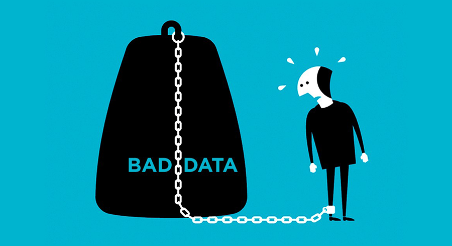
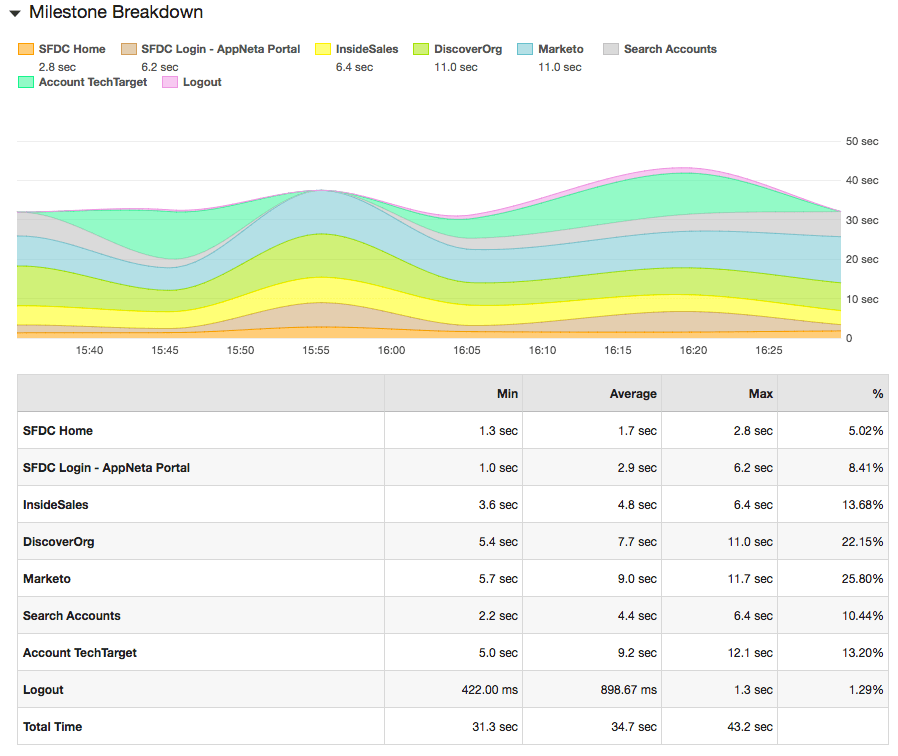

per year is lost due to lost prodcutivity.
According to a recent research by
, UK workers say they losing millions of working hours each week because of poor technology in the office. The study was based on a survey
of 1,000 office workers, they found that a total of 7.5 million working days each week were being lost by staff because the technology at work was not good enough.

How much time and money is bad technology costing you?
Findings from the Chelsea Apps Report
59% of people said that their personal mobile phone was better than the one work gave them to use.
Just 11% said that their work phone was better.
Twice as many people have better mobile phone coverage at home compared to their workplace (49% v 23%)
An astonishing four times as many people said their home tablet computer was better than the one work gives them to use (50% v 11%)
With your computer, it was close, but still 45% of people said their home computer was better than their work computer.
34% said their work computer was better than the one they had at home.
Half of the 1,000 office workers said their broadband was better at home than at work.
Less than a third said that their work broadband was better. (50% v 29%)
And with wifi, 55% said theirs was better at home than in the office.
Only 23% – less than a quarter – said that their wifi was better in the office rather than at home.
Mike Anderson, CEO of Chelsea Apps Factory, said:
“It’s clear that the ‘techspectations’ of the modern employee far outweigh what companies can deliver – and employees are literally taking matters into their own hands.
“Businesses are still investing unnecessary millions on clunky, highly-complex systems, services and software that leave employees stumped, unproductive and in some cases so unhappy they would consider leaving their job.
Why is EtherCRM diffrent?
How much time and money we can save you today
The location of your office in relation to the location of your instance of your software and plugins is a factor in understanding the performance of your application. It’s actually central to many of the performance issues users of Salesforce for example
see. Diminishing the physical distance and the number of network hops to get to Salesforce can have a huge impact on performance.
EtherCRM are dedicated to providing its platform where its needed to improve performance and relability.
The average Salesforce customer has seven plugins within Salesforce, each of which can dramatically help or hurt the overall end-user experience of Salesforce. T The majority of your total data transfer could actually be from these third-party plugins,
which work with Salesforce to provide lead sourcing, marketing, sales and accounting capabilities. Therefore, you want to explore how much bandwidth your plugins are using, and from where these plugins are being served, as seen below

A Successful CRM depends more on strategy than on the amount you spend on technology. Strategy is about allocating scarce resources to create competitive advantage and superior performance. We believe that the only way you can make CRM work is by taking
the time to calculate your customer strategy, which helps employees understand where they are going and why, and to align your business processes before implementing the technology.
By starting with our customers in mind, EtherCRM is built to meet the needs of our customers not just today but also tomorrow.
Our driving purpose is to improve our clients businesses, making sure our system is able to deliver this quickly, is something we weork on daily.
Based on our client feedback in 2017 We save each indivual, within a fincial advice business, between 6hrs and 14 hrs per week.